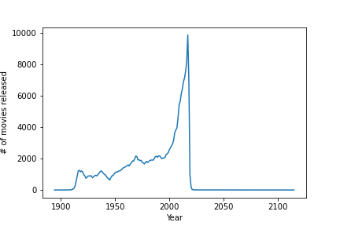

P is for Pandas
Pandas is a very popular data analysis library for python. It’s an invaluable tool for transforming and munging data. Some of my favourite features include:
- It can read data from a ton of formats including csv, json, and database tables
- There are lots of convenience features built in such as easy plotting, filling in missing data, dropping duplicates, filtering data etc
- It’s compatible with a lot of other python data science libraries (e.g. numpy, scikit-learn, etc)
It makes it really easy to read and explore your data since you can read, filter, and plot your data in just a few lines of code. This blog is not going to be a comprehensive tutorial (there are actual tutorials linked in the Other Resources section below). It’s intended to give you a brief idea of the kinds of things that pandas can do (to save you from rewriting code to do that yourself). The documentation is quite good and will give you an idea of the types of analysis you should use pandas for (hint: most of them).
The main data types in pandas are series and dataframes. You can think of a dataframe as a spreadsheet or a table in a database. Dataframes are made up of series (just think of a series as a column in a spreadsheet/table).
Using pandas
Installing and importing pandas
If you’re already familiar with installing python packages use conda install pandas or pip install pandas. For more in depth instructions there is a guide here. Once you have it installed you can import it using
import pandas as pdPeople conventionally rename pandas to pd (e.g. pd.DataFrame instead of pandas.DataFrame) since you will end up typing pandas/pd a lot.
Here I’m going to use the movie data used in Brandon Rhode’s “Pandas From the Ground Up” tutorial. This includes CSV (comma separated value) files with movie titles and release dates as well as casting. After we’ve downloaded the data we want to load it into a dataframe. We can do that using
titles = pd.read_csv('titles.csv')If we want to look at the first 10 rows of the dataframe we can use the head method
print(titles.head(10))which will output the first N rows (in this case 10). This is an easy way to see what the data looks like and if the data is well formatted.
| title | year | |
|---|---|---|
| 0 | Lusty Neighbors | 1970 |
| 1 | The Adventures of Priscilla, Queen of the Desert | 1994 |
| 2 | Captain Sindbad | 1963 |
| 3 | Cold Dark Mirror | 2015 |
| 4 | Ostatnia Rawa Ryska Riedla | 1997 |
| 5 | Forever and Ever | 2018 |
| 6 | Western Conviction | 2018 |
| 7 | 5 Estrellas | 2018 |
| 8 | Ropewalk | 2000 |
| 9 | Sally in Our Alley | 1931 |
Selecting and filtering data
We can easily select rows in our dataframe. For example if we wanted to find movies released in 1991
titles[titles['year'] == 1991]| title | year | |
|---|---|---|
| 71 | Le voleur d’enfants | 1991 |
| 132 | Madreseye piremardha | 1991 |
| 196 | Pyat pokhishchennykh monakhov | 1991 |
| 217 | Canh bac | 1991 |
| 509 | Itakwil man ako ng langit | 1991 |
Let’s break down the above statement a bit. We use titles[‘year’] to select the year column in the data frame. titles[‘year’] == 1991 returns a series of booleans (True if the year is 1991 and False otherwise). Finally, titles[titles['year'] == 1991] says “give me the rows from titles where the condition is True”. We don’t just have to look for rows with exact matches. Let’s search for movies containing “The Hobbit” in the title
titles[titles['title'].str.contains('The Hobbit')]| title | year | |
|---|---|---|
| 121727 | The Hobbit: The Battle of the Five Armies | 2014 |
| 146926 | The Hobbit: An Unexpected Journey | 2012 |
| 166752 | The Hobbit: The Desolation of Smaug | 2013 |
| 179646 | The Hobbit: The Swedolation of Smaug | 2014 |
Counting values
Let’s say we want to count how many movies were released per year. We can do this using
titles['year'].value_counts()which gives a sorted list from highest count to lowest. In our data set we see that 2017 released the most movies followed by 2016. I suspect that this dataset was compiled in 2017 and that 2018 had more movies released in it than the previous year.
| year | count |
|---|---|
| 2017 | 9888 |
| 2016 | 8198 |
| 2015 | 7564 |
| 2014 | 7159 |
| 2013 | 6896 |
The value_counts function also has a normalize parameter which divides the counts by the total number of rows.
titles['year'].value_counts(normalize=True)| year | frequency |
|---|---|
| 2017 | 0.0437497 |
| 2016 | 0.0362722 |
| 2015 | 0.0334671 |
| 2014 | 0.0316752 |
| 2013 | 0.0305115 |
Here we can see that about 4% of all movies ever released were released in 2017.
Plotting data
If we want to plot the number of movies released per year over time how would we do that? In pandas we can just do
counts_per_year = titles['year'].value_counts()
# This just sorts it so that the years will be in order
counts_per_year = counts_per_year.sort_index()
counts_per_year.plot()
It looks like the number of movies being released has been increasing over time. There are also movies in the dataset that are scheduled for release (including one in 2115!) which explains the sharp dropoff. The .plot() methods that wrap matplotlib so you can customize your plots as much as you want.
Grouping and merging data together
A common (but slightly more advanced) use case for pandas is grouping data together. Imagine we want to see which actors/actresses mostly played leading roles in their career (who appeared in at least 50 movies). To do so we will first load in the cast dataset
cast = pd.read_csv('cast.csv')
print(cast.head())| title | year | name | type | character | n | |
|---|---|---|---|---|---|---|
| 0 | Closet Monster | 2015 | Buffy #1 | actor | Buffy 4 | 31 |
| 1 | Suuri illusioni | 1985 | Homo $ | actor | Guests | 22 |
| 2 | Battle of the Sexes | 2017 | $hutter | actor | Bobby Riggs Fan | 10 |
| 3 | Secret in Their Eyes | 2015 | $hutter | actor | 2002 Dodger Fan | nan |
| 4 | Steve Jobs | 2015 | $hutter | actor | 1988 Opera House Patron | nan |
Here we have the title of the movie, the year it was released, the name of the actor/actress, if they were an actor/actress, the character name, and the listing in the credits (n). A listing number of 1 means they played a leading role and higher numbers usually correspond to extras. Some of the values of n are “nan”, which stands for “not a number”. We want to drop those rows to only get listed roles.
listed_roles = cast.dropna(subset=['n'])Now we want to find how many movies easy actor appeared in
num_roles = cast.groupby('name').size()| name | |
|---|---|
| James Millican | 67 |
| Ei Kimura | 1 |
| Brian Torpe | 1 |
| Steve Edis | 1 |
| Carlos Esteban Fonseca | 3 |
Note that this is roughly equivalent to the value_counts method. Now we want to select the actors who appeared in at least 50 movies
in_lots_of_roles = num_roles[num_roles>50].reset_index(name='total_roles')| name | total_roles | |
|---|---|---|
| 0 | A. Bromley Davenport | 52 |
| 1 | A.K. Hangal | 87 |
| 2 | Abdur Razzak | 63 |
| 3 | Abhi Bhattacharya | 63 |
| 4 | Abhishek Bachchan | 52 |
Now we need to get all the roles each of those actors played. We can do this by merging this dataset with the listed_roles dataframe.
merged = pd.merge(in_lots_of_roles, listed_roles)| name | total_roles | title | year | type | character | n | |
|---|---|---|---|---|---|---|---|
| 0 | A. Bromley Davenport | 52 | A Maid of the Silver Sea | 1922 | actor | Old Tom Hamon | 3 |
| 1 | A. Bromley Davenport | 52 | A Sister to Assist ’Er | 1927 | actor | Jim Harris | 4 |
| 2 | A. Bromley Davenport | 52 | Bonnie Prince Charlie | 1923 | actor | Sir John Cope | 11 |
| 3 | A. Bromley Davenport | 52 | Boy Woodburn | 1922 | actor | Matt Woodburn | 3 |
| 4 | A. Bromley Davenport | 52 | Captivation | 1931 | actor | Colonel Jordan | 6 |
Finally, we can see which actors played mostly leading roles in their career. We will group by the actors name, then take the average of their listing number. The closer to 1.0 the number is the more leading roles they played. We will sort the values to see the actors closest to 1.0 at the top.
merged.groupby('name')['n'].mean().sort_values()| name | n |
|---|---|
| William S. Hart | 1 |
| Yilmaz Güney | 1.01724 |
| Mary Pickford | 1.03509 |
| Tom Mix | 1.06186 |
| Mary Miles Minter | 1.09804 |
It appears that William S. Hart had a leading role in every film that he appeared in.
Summary
Pandas is an extremely powerful python library for doing data analysis. There can be a bit of a learning curve but it is worth spending some time exploring the library. Once you can perform some basic tasks (sorting, filtering, groupbys, plotting) then you will become a data analysis wizard!